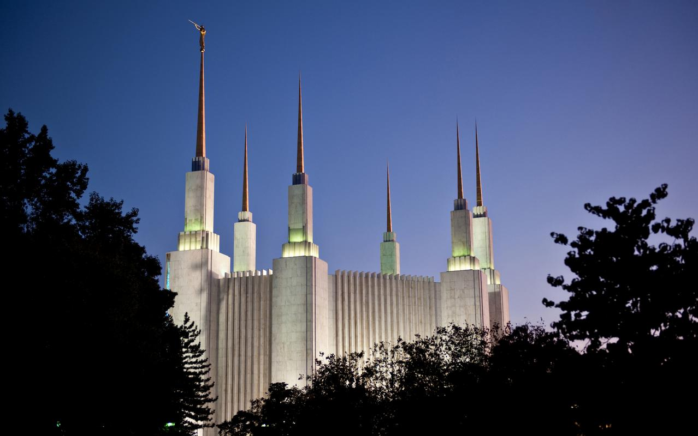

The Washington DC Temple was the first Latter-day Saint temple to be built on the East Coast of the United States. When the temple was completed in 1974, it served all Latter-day Saints living east of the Mississippi and some Latter-day Saints in South America and Canada. At 160,000 square feet, it is the third largest temple in the world. It contains instruction rooms and sealing rooms, where marriages are performed.
On the east side of the temple, the central tower reaches a height of 288 feet, making it the tallest spire on a Latter-day Saint temple anywhere in the world. The three spires on the east and the three on the west represent two branches of Church leadership, the Aaronic and Melchizedek Priesthoods. The six-spire design echoes the design of the Salt Lake Temple. An 18-foot-tall sculpture of angel Moroni created by Avard Fairbanks graces the tallest spire. The statue, cast in bronze and covered in gold leaf, was the third to be placed on a temple. Fairbanks portrayed the angel Moroni lifting a trumpet to his lips and holding golden plates in his left arm. Latter-day Saint sculptor Franz Johansen created 16 bronze medallions — eight of which decorate the temple gates and eight of which decorate the temple doors — illustrating the sun, moon, and stars, among other designs.
Nearly six years after the temple was announced on November 15, 1968, the temple was ready to be dedicated. The temple opened to the public from September 17 to October 19, 1974, and more than 750,000 visitors toured the building. High profile visitors, including Betty Ford, Gerald Ford’s wife, were among those who viewed the temple interior.
The temple was dedicated in 10 sessions held from November 19 to 22, 1974. Church President Spencer W. Kimball offered the dedicatory prayer, in which he gave thanks for those who paved the way for the founding of the United States: “We are grateful that thou didst cause this land to be rediscovered and settled by people who founded a great nation with an inspired constitution guaranteeing freedom in which there could come the glorious restoration of the gospel and the Church of thy Beloved Son.”

On March 3, 2018, the Washington DC Temple closed for an extensive renovation. The building will receive considerable upgrades to its mechanical system and the finishes and furnishings will be refreshed. There will also be changes to the landscaping and a small addition to the exterior to enclose a new elevator system and stairs.
On June 17, 2020, the Church announced that, because of concern for the effects of COVID-19, the open house, youth devotional, and rededication of the Washington DC Temple are postponed until large public gatherings are deemed safe.
On March 3, 2018, the Washington DC Temple closed for an extensive renovation. The building will receive considerable upgrades to its mechanical system and the finishes and furnishings will be refreshed. There will also be changes to the landscaping and a small addition to the exterior to enclose a new elevator system and stairs.
On June 17, 2020, the Church announced that, because of concern for the effects of COVID-19, the open house, youth devotional, and rededication of the Washington DC Temple are postponed until large public gatherings are deemed safe.